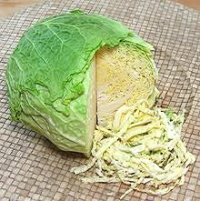
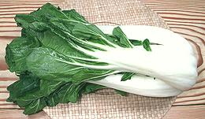

SAFARI
Users
Our arrangement here is functional, rather than scientific, so plants of different genera and species are mixed together.
- General & History
- Varieties
- Head Cabbages Including Brussels Sprouts
- Loose Leaf Greens
- Herbs
- Asian Greens
- Health & Nutrition
- Links - to information on Cabbages
General & History
Cabbages, Mustards, Turnips and Radishes (to the botanist they're all "Mustards") are native to Europe and Asia. Because they were so important to diet and survival they have been bred for desirable features since prehistoric times. While some were bred for roots and others for flower heads, leaves were not neglected either. All these plants are naturally loose leafed, but "heading" cabbages had already been developed in Mediterranean Europe during Roman times.
Varieties
All the cabbages, mustards and turnips important as edible greens belong to the genus Brassica of family Brassicaceae. Despite their diversity of appearance they belong to just a few species, though each species may have many very different agriculturally developed cultivars. The exception is the Rutabaga which is a cross between a cabbage and a turnip (Rutabaga leaves are edible but I've never seen them sold).
- B. oleracea - Cabbages, Broccoli, Cauliflower, Kale, Brussels Sprouts.
- B. rapa - Turnips, Chinese cabbages. Rapini
- B. juncea - Mustard Greens.
- B. napus - Rape (source of canola oil)
- B. sativus - Radishes.
Head Cabbages
-Oleracea Species
Heading Cabbages [Brassica oleracea Groups capitata and Gemmifera] include two major cultivars: alba (white) and rubra (red), but there are numerous varieties of each. Categorization is not always clear - for instance, there's a continuum of varieties from white cabbage to savoy cabbage.
Brussels Sprouts[B. oleracea Group Gemmifera] This cabbage grows a large fibrous central stem with large collard-like leaves radiating from it. When those leaves become old they yellow and fall off, and are replaced not by new leaves but by small cabbage heads radiating out from the main stem just above the leaf scar. Cabbages of this type may have been known in Roman times, but they first became a major crop in Belgium around 1590. These cabbages have long been voted "most hated vegetable" in
England, but even there they are becoming more popular as the English
slowly learn to cook. The photo specimen stem was 20 inches long and
weighed 3 pounds 11 ounces. Individual heads were up to 1-3/4 inches
diameter. Yield was 61 heads weighing 2 pounds 14 ounces (78%).
Details and Cooking.
Flathead Cabbage[Taiwan Cabbage, Group capitata f. alba] Marketed as "Taiwan Cabbage" in a Los Angeles Asian market, this
is not an Asian cabbage at all but a regular White Cabbage of the
flathead persuasion. In the U.S. white cabbages are described by
season (early, mid, late) and by shape (flat, round, etc.). This
cabbage can be used in the same manner as any other white cabbage.
The photo specimen was 7-1/2 inches in diameter, 4 inches high and
weighed 2 pounds.
Napa CabbageThis is actually a turnip green - see Napa Cabbage under Asian Greens. Red Cabbage [Red Kraut, Blue Kraut, Group capitata var. f. rubra]
[Red Kraut, Blue Kraut, Group capitata var. f. rubra]
Red cabbages are very similar to the white except for the red coloration
from Anthocyanin pigments. Color may vary from red to blue depending on
acidity of the soil the cabbage grew in. This red pigment is a
powerful antioxidant, the same one found in red wine. Red cabbage has
been popular in Northern Europe because it keeps better than white
cabbage so doesn't need to be made into sauerkraut to get through the
winter. Some writers say red cabbage tastes exactly like white but that
isn't quite true.
Details & Cooking.
Savoy Cabbage [Cavolo Verza (Italy); Savoyer Kohl (Germany); Brassica oleracea var. sabauda Savoy cabbage group]
Probably originating in the Netherlands, this cabbage is named for the
Savoy region of France. It is similar to White Cabbage but the leaves
are all crinkly, so the head is lighter in weight. The large leaves
are thinner and more delicate than those of White Cabbage, but
unwrap easily from the head. Taste is similar to White Cabbage, but
this cabbage is especially desirable for raw salads and similar uses
due the its crinkly appearance and the fluffy appearance of shreds.
It also holds dressings much better than regular cabbage. The photo
specimen was 5-1/2 inches diameter and weighed 1-1/2 pounds.
Spitzkohl[Sommerkohl, Filderkraut; group capitata fo. alba subfo. conica]
This cabbage is a specialty of Germany and Central Europe.
It is similar to White Cabbage but the leaves are much looser, so the
head is lighter in weight and pointy at the top. Taste is similar
to White Cabbage but more delicate. The Filderkraut variety is
firmer, and made into specialty sauerkraut. The photo sample was 6
inches diameter and weighed 1-1/4 pounds. It was purchased in
Los Angeles in 2007, labeled "Savoy Cabbage".
White Cabbage [Group capitata var f. alba]
[Group capitata var f. alba]
This is the standard Euro/American cabbage and the one European
sauerkraut is made from (Asian sauerkraut is made from an entirely
different cabbage). Many cultivars are grown but they all look exactly
the same in the store. All the big loose outer leaves are removed at
the farm and the last semi-loose ones are removed at the store leaving
just a pale green ball of immature leaves. The photo specimen was a
typical market size at 6 inches diameter and 2 pounds, but heads
grown for sauerkraut can weigh up to 60 pounds.
Details & Cooking.
|
Loose Leaf Greens
ChardChard is not a cabbage, it's a beet green, and a member of the Amaranth Family. For details see our Chard / Swiss Chard page. Collard Greens[Couve (Brazil), Couve-galega (Portugal), Berza (Spanish), Brassica oleracea Group Acephala] This cabbage, closely related to Kale, may have originated in
Western Asia, but was well known and cultivated by the ancient Greeks
and Romans. Either the Romans or the Celts carried it as far north as
Scotland. Scots took it to the American South where it was adopted by
slaves because it could be used similarly to African greens they were
accustomed to. These Collards may not be much used in Scotland today,
replaced by Spring Greens. These are not
the "Collards" of West Africa, which are much more tender (see
Kale). The name "Collard" is
probably a corruption of the old English "coleworts" (cabbage plants).
Details and Cooking.
Kale[Brassica oleracea Group Acephala]\
Closely related to Collard Greens, kale comes
in various shades of green (mostly dark blue-green) and degrees of
curliness. Until the Renaissance kale was the dominant cabbage
throughout most of Europe and is still much grown there and in North
America. Unfortunately, Curly Kale is the most common form in North
American supermarkets, but other varieties occasionally appear. Kale
is considered the highest ranking vegetable for nutrition vs. calories
and contains powerful antioxidants.
Details and Cooking.
Kohlrabi[Su Hao (Viet); Ganth Gobhi (Hindi); Knol-Khol (Tamil); Monj-hakh, Haakh (Punjab); B. oleracea group Gongylodes] It may look like it belongs with the root cabbages but the
"bulb" is actually a swollen stem, so it's all "greens". The leaves
are quite edible but take long simmering to be tender. The bulb is
similar to broccoli stem but sweeter. Generally these are eaten fairly
small because they become woody as they grow larger, about 2 inches
in the spring and 4 inches in the fall. Cultivar Gigante is still
edible in larger sizes. Young kohlrabi can be eaten raw in salads
as well as being cooked.
Details and Cooking.
Mustard Greens[Mustard Cabbage, B. juncea]
Possibly originating in Central Asia, this species spread all through
Europe and China and exists as many cultivars very different from each
other (see Gai Choy for an example). Mustard greens
were carried to North America and are popular in the cuisine of the
American South to give a touch of pungency to
Collards and other greens. The
photo specimens were 14 inches long.
Rapini[Broccoli Rabe, Broccoletti (Italian), B. Rapa Group Ruvo]
Though it looks much like Chinese Broccoli and has broccoli-like
flower heads, Rappini is actually a turnip green. Originally an
Italian vegetable, it is now widely grown and widely available in
North America. The leaves have toothy edges, exact shape and
toothiness depending on cultivar, and the flowers are yellow. The
taste is a little sharper than regular broccoli and it has a faint
bitterness. If a few flowers are open that's not a problem, but
wilting or yellowing leaves are. Rapini is a significant source of
vitamins A, C, and K, potassium, calcium, and iron.
Spring Greens[Spring Greens (UK); Brassica oleracea Group Acephala] This is properly leaves of a cabbage closely related to heading cabbages, but which don't form a head, or form an extremely loose head. The term is also used for young leaves of heading cabbages picked before the head forms, particularly when thinning cabbage plantings. Acephala group cabbages are closer to wild cabbages than the heading variety. The "Spring Greens" variety is much favored in Northern Europe due to its cold hardiness and early spring appearance. These leaves are tougher, coarser, and much darker than the leaves people are accustomed to from heading cabbages, and will take longer cooking. In North America, the term "Spring Greens" refers to any
tender young greens, which may be lettuces, kale, chard, herbs,
spinach, etc. often sold as salad mixes.
Photo by congerdesign contributed to the Public Domain.
Sukuma Wiki / "Collard Greens"[Brassica oleracea Group Acephala]
This is actually Kale, but listed separately due to confusion. A very
important green in East Africa, broad leaf Kale is translated as
"Collard Greens" in that region, but it's not our North American
Collard Greens. Ours came from Scotland, and are much tougher,
requiring a lot more cooking time.
Details and Cooking.
Photo borrowed from
Latia Agribusiness Solutions Ltd under Fair Use.
Turnip Greens[B. rapa rapa] Originating in Europe or Western Asia, the turnip has been cultivated since
prehistoric times. It is most known as a root crop and has been essential
to winter survival in Northern Europe for thousands of year. Some
varieties have been developed for their leaves rather than roots. I
consider this the best green for mixing up with sausages for breakfast.
The photo specimens were 15 inches long.
Mediterranean Mustard [Hirschfeldia incana formerly Brassica geniculata]
[Hirschfeldia incana formerly Brassica geniculata]
This perennial herb, native to the Mediterranean Basin, is now an
abundant noxious weed in many parts of the world. The leaves are a
traditional leaf vegetable in its native region (and are also edible
if found in other regions).
Photo by La la means I love you, distributed under license
Creative Commons
Attribution 3.0 Unported.
Sea Kale[Crambe, Seakale; Crambe maritima] This plant grows wild on the European coasts of the Baltic and North Atlantic, and around to the Black Sea, and is cultivated as a vegetable. The height of its popularity was the early 19th century, and it was planted in North America by Thomas Jefferson. It was,
and still is, eaten mainly as blanched shoots with butter or sauces,
similarly to white asparagus. It is rather subject to bruising and
damage, so its use declined as the age of transportation began. It
is now mainly grown in private gardens, propagated from root cuttings.
Photo of flowering plant by
Siim at
et.wikipedia"
distributed under license Creative Commons
Attribution 3.0 Unported, Attribution Required.
Photo of blanched plant by Stevechelt distributed under license
Creative Commons
Attribution 3.0 Unported.
Hedge Mustard[Sisymbrium officinale]
Native to Europe and North Africa, this plant, not a true mustard but
closely related, is cultivated across Europe. The slightly bitter
leaves are used in salads and cooked as a potherb. The seeds are used
as a condiment as those of other mustards. The plant also has medicinal
uses.
Photo by TeunSpaans distributed under license
Creative Commons
Attribution 3.0 Unported.
|
Herbs
 [Family Brassicaceae (formerly Cruciferae)]
[Family Brassicaceae (formerly Cruciferae)]
The huge Cabbage / Mustard family is best known for the leafy and root
vegetables that got humans through the winter in earlier times, but
also produces some popular herbs and flowers. These now have their own
Mustard Family - Herbs page.
Asian Cabbage, Mustard, Turnip & Radish Greens
A Choy
A Choy is not a cabbage, it's a Lettuce, a member of the Daisy Family.
Rapa Species - Turnip Greens
All the varieties in this group (Brassica rapa) are actually turnip greens - turnips bred for leaves and stems rather than roots. The only Western green of this sort is Rapini (Italian broccoli). This species includes almost all the Asian greens that have become standard in American markets.
Bok Choy, Large [Xiao baicai (Mandarin); Pak Kwang Bae Bai Khao (Thai); Brassica rapa Group Chinensis]
This large form is now widely available in North American produce markets
and even many supermarkets. This vegetable is the "cabbage" of
southern China, while Napa Cabbage (also a
turnip green) takes its place in the north. It is available in a variety
of sizes but the photo specimen was 14-1/2 inches long and weighed just
over 3 pounds.
Details and Cooking.
Bok Choy Mui[Brassica rapa Group Chinensis]
This is the "real" baby bok choy, one of my favorite vegetables for
stir fries and such, but it's not widely available outside markets
serving Asian communities. It is not really "baby", it's a tiny
variety, as witnessed by the mature flower heads you will find on it.
There are actually a number of miniature cultivars, some smaller,
some larger. Taste is similar to full size bok choy but the
distribution of stem and leaf is more pleasing, in my opinion.
Details and Cooking.
Bok Choy - Long[Brassica rapa Group Chinensis]
This cultivar is longer and narrower than a regular mid-size bok
choy, but it tastes the same and can be used in exactly the same way. It
does have the advantage that the stems are less bulky, thus need less lead
time over the leaves when cooking and the texture of the dish will be less
coarse. It frequently shows up in Asian markets in Los Angeles, but probably
not much elsewhere yet.
Details and Cooking.
Bok Choy - Short[Brassica rapa Group Chinensis]
This cultivar has recently appered in Asian markets in Los Angeles
(2019). It features very crinkly leaves, and a leaf to stem ratio
similar to Bok Choy Mui. The heads were typiclly 4-1/2 inches high
and 5 inches wide, weighing 4 ounces each.
Details and Cooking.
Bok Choy - Shanghai[Baby Bok Choy (U.S. grocers), Qingcai (Shanghai Chinese), Pak wang Tung Hong Tae (Thai); Chingensai (Japanese); Brassica rapa Group Chinensis] Probably the most popular vegetable in the Shanghai region (Zhejiang), this bok choy is now widely available in North American supermarkets. It's smaller than the white stemmed bok choy they sell, so supermarkets, always anxious to snag the yuppie dollar, call it "Baby Bok Bhoy". Hey, yuppies buy "baby carrots" (machine made from large carrots) and bags of bland "baby spinach", so "baby" anything should sell. The flavor of this bok choy is somewhat different than that of the
white stemmed variety. Besides being light green the stems are much
thinner, so this variety is better suited to steam whole or split
lengthwise. In Asian markets a tiny "Mui" version is also
increasingly seen, and are very popular in China.
Details and Cooking.
Bok Choy - Sweet[Taiwan Pak Choy; Brassica rapa Group Chinensis]
A very tender bok choy with light green to slightly yellowish leaves. The
stems, which are whiter than those of Shanghai bok choy, are almost as
tender as the leaves. It is mild in taste and cooking properties are
very much like lettuce (lettuce is used in stir fries in Taiwan).
This is not a traditional green but was recently developed in Taiwan.
and has started (2011) appearing in markets here. The photo specimens
were bought from an Asian market in Los Angeles in a 1 pound 5 ounce bag.
Details and Cooking.
Bok Choy - Taiwan][Taiwan Pak Choy; Brassica rapa Group Chinensis
A very tender bok choy with light green to slightly yellowish leaves. The
stems, which are whiter than those of Shanghai bok choy, are almost as
tender as the leaves. It is mild in taste and cooking properties are
very much like lettuce (lettuce is used in stir fries in Taiwan).
This is not a traditional green but was recently developed in Taiwan.
and has started (2011) appearing in markets here. The photo specimens
were bought from an Asian market in Los Angeles in a 1 pound 5 ounce bag.
Details and Cooking.
Napa Cabbage[Chinese Cabbage, Celery Cabbage; Da Baicai, Pe-Tsai, Wong Bok (China); Hakusai (Japan); Brassica rapa Group Pekinensis] Napa Cabbage (the name comes from a Japanese word for Cabbage Leaves) is what most of the world thinks of as "Chinese Cabbage", even though it's actually a turnip green. In southern China that name more properly belongs to Bok Choy (also a turnip green). Napa cabbage is much favored in northern China and Korea, especially for its winter keeping properties. There are two common forms, the short blocky form now found in just
about every North American grocery store, and a long narrow form
pointed at the top. The long form is found in markets serving Asian
communities and is preferred for making Korean kimchee, Chinese
sauerkraut and for other fermented or pickled applications. The taste
and texture are the same, the long shape is simply more convenient
for those uses.
Details and Cooking.
Mizuna[Kyona (Japan), Xiu Cai (China), Chinese Potherb Mustard (made up by people desperate for an English name), California Peppergrass, Brassica rapa Group Nipposinica]
This extremely mild turnip green is widely grown in China, and
particularly Japan. It's currently not common in regular markets
even here in Los Angeles, and even in Asian markets, but is easily
found in yuppie outlets like Whole Foods Market. You can use it raw
in salads or cooked in soups and stir fries. Raw I find it so mild
it's hardly worth the bother, but lightly steamed or stir fried it
has much more flavor and is quite pleasant, particularly if you
consider regular mustard greens too strong. In the Shanghai region
of China it is fermented (Snow Vegetable), or fermented and dried
(Shaoxing Vegetable), as popular ingredients. I use Small Gai Choy
as a very acceptable alternate, though it needs to be cut differently.
Tatsoi [Rosette Bok/Pak Choy, Chinese Flat Cabbage, Broad-beak Mustard,
Spoon Leaf Mustard, Ta gu Choy, Tagu Choy; Ta gu cai, Ta cai (China);
Tai koo choi (Cantonese); Taasai (Japan); Brassica rapa group
narinosa]
[Rosette Bok/Pak Choy, Chinese Flat Cabbage, Broad-beak Mustard,
Spoon Leaf Mustard, Ta gu Choy, Tagu Choy; Ta gu cai, Ta cai (China);
Tai koo choi (Cantonese); Taasai (Japan); Brassica rapa group
narinosa]
This choy is a mildly mustardy turnip green with an unusual growth pattern. It is very flat with the long stemmed spoon shaped leaves growing horizontally from the center. The photo specimen, purchased from an Asian grower in Los Angeles,
was 18 inches in diameter and only about 4 inches high, weighing 14
ounces. Tatsoi is widely described as a cross between regular bok choy
and shanghai (baby) bok choy, but I can not confirm that. I find this
a fine general purpose choy - give the stems a head start over the
leaves when cooking.
Details and Cooking
|
Chinese Broccoli
- see Gai-lan.Chinese Cabbage
- see Napa Cabbage.Choy Sum
This name does not specify a specific vegetable but translates as "vegetable heart". It consists of just the center stalk and flower head and the leaves directly on that stalk of any Chinese cabbage. The most common are Bok Choy Sum which has white stems and Yu Choy Sum which has green stems.
Juncea Species - Mustard Greens
All the varieties in this group (Brassica juncea) are mustards and related to the Western mustard greens found in American markets, though some are quite different in appearance and texture, and most are milder.
Gai Choy[Mustard Cabbage, Swatow Mustard, B. juncea]
Despite its different appearance, this mustard is of the same species
as the common Mustard Greens sold in
American groceries and has about the same pungency but the leaves and
stems are fleshier. These greens are most commonly pickled and / or
salted as "Preserved Mustard". In the larger sizes they are
considered imperfectly digestible if not pickled, but smaller ones
are used in stir fries.
Small Gai Choy[Mustard Cabbage, Swatow Mustard; B. juncea]
This cultivar shares the ridged leaves and curved growth habit of
large Gai Choy, but is looser, longer, greener and the ridges are less
pronounced. it is quite a bit milder and more tender - excellent for
stir fries, particularly with pork or chicken. The stems, even large
ones are tender. Be careful not to overcook, the stems should retain
some crunch. Actually, it's quite edible raw. I have recently
purchased this from an Asian market in Los Angeles (San Gabriel) at
2016 US $0.79 / pound. It can be up to 12 inches long, but is usually
shorter.
Sher Li Hon[Hmong Gai Choy; Sher-lihon, Pak Gat kaan, Kluay (Thai) Brassica juncea var. multiceps Tsen et Lee)]
These mustard greens are very mild and sweet, and the stems
are extremely tender - there is no need to give them a head start over
the leaves when cooking unless they are very large. Even at 1 inch
they are edible and without noticeable fibers. The leaves are thin
and tender. The photo specimens were up to 24 inches long with the
largest stem about 1 inch diameter. There are other cultivars under
this same name that have leaves of different shape. I have purchased
this green from a large Asian market in Los Angeles (San Gabriel)
for 2017 US $0.59 / pound.
Details and Cooking.
Long Mustard[Texas Mustard Greens, White Mustard Greens, Chinese Mustard Greens; Brassica juncea] These mustard greens look similar to Sher Li Hon, but much bigger. This plant should not be confused with the Mustard from which White Mustard Seeds are obtained (Sinapis alba). This one is called "white" because the stems are of a light color. The photo specimens were up to 32 inches long with leaves up to 10 inches wide and the largest stem about 1-1/8 inch diameter. I often find these greens at a large Asian market in Los Angeles (San Gabriel) for 2017 US $1.69 / pound. These greens are a little tougher and noticeably more pungent
than Sher Li Hon, but still reasonably mild. The stems are still
fairly tender, but do have fibers. I suggest slicing thick ones on
the diagonal about 1/4 inch thick at the thick end, increasing to 1
inch at the thin end. Stems should be given a couple minutes head
start before the leaves when cooking.
|
Capsella Species - Shepherd's Purse
There are only three species in genus Brassica Capsella, and only one has any significence as food - and only in a small part of China.
Shepherd's Purse[Chinese Cress, Ji Cai (China); Naengi (Korea); Capsella bursa-pastoris] Native to Europe and Asia, this weedy plant is now found just about everywhere in the northern hemisphere, from North Africa to Greenland. It grows as a low rosette of toothy leaves and sends up flower stalks that can be almost 20 inches tall, but usually a lot shorter. There are white flowers at the top and distinctive heart shaped seed pods all down the stem. Caution: While this is the plant properly called "Chinese Cress", packages of frozen greens from China I have found labeled "Chinese Cress" are actually Indian Aster (Kalimeris indica), of the Daisy family. On the other hand, I have found frozen packages of Shepherd's Purse from China properly labeled "Shepherd's Purse" This plant is found in the wild and also cultivated for food. It
is popular in the Shanghai region of China, where the leaves are stir
fried with other ingredients and also used as wonton fillings and
especially in dumplings and pot stickers. In Japan it is included in
a symbolic dish made for the spring festival. In Korea the root is
blanched and used in namul, a dish of fresh greens and vegetables,
variously prepared. The plant has been used as a medicinal herb in
Europe.
Photo by MarkusHagenlocher distributed under license
Creative Commons
Attribution 3.0 Unported.
|
Oleracea Species - Cabbages
Most Asian greens are turnips, mustards and rapes. Head Cabbages (Brassica oleracea) are European, though increasingly used in Asia - but there is one notable exception - Chinese Broccoli, an Asian green which is actually a true broccoli.
Gai-lan[Chinese Broccoli, Chinese Kale, Kai-lan (China), B. oleracea Group Alboglabra] While it looks a lot like Rapini (Italian broccoli), Chinese Broccoli is actually a broccoli, related to Western broccoli and cabbages. Interestingly, Rapini is a turnip green, one of only a few turnip greens commonly used in the West. Gai Lan is different in form from European broccoli, having thinner more tender stems, tiny flower heads and a lot of large leaves - probably resembling European broccoli during the Roman Empire. The stems are always used, and open flowers, generally white, do
not become bitter and are included with the rest of the plant when
cooking. Separate leaves from stems and give the stems a head start
when cooking.
This is a very important vegetable in the cooking of China and Southeast
Asia but only beginning to show up in U.S. supermarkets.
Details & Cooking.
|
Napus Species - Oilseed Rape
Plants shown here are all edible varieties of Oilseed Rape (Brassica napus). A genetically engineered variety produces Canola oil (a low erucic acid rapeseed oil). While most rape grown worldwide is used to produce oil and animal feed, these edible varieties are very fine vegetables indeed.
Yu Choy [Oilseed Rape, Chinese Spinach; Pak Kwang Tung Dok (Thai); Yu Choy,
Yau Choy (China); Nanohana (Japan), Brassica napus]
[Oilseed Rape, Chinese Spinach; Pak Kwang Tung Dok (Thai); Yu Choy,
Yau Choy (China); Nanohana (Japan), Brassica napus]
This is an edible variety of the same plant Canola Oil and Rapeseed Oil are produced from (Canola is a non-toxic low erucic acid rapeseed oil). While most rape grown worldwide is used to produce oil and animal feed, the edible variety is used as a vegetable and is now widely available in North American markets serving Asian communities. It is particularly noted for the sweetness and tenderness of its stems. Some refer to Yu Choy as "Chinese Spinach", but that's not very
accurate. Yu Choy does have a touch of the oxalic sharpness of
spinach, but very much milder, and the flavor is definitely of the
mustard family.
Details and Cooking
Yu Choy MuiThis is the "mui" version of regular Yu Choy. It matures at a relatively small size. Mui Choys are popular because they are smaller and more tender, and can be cooked in different ways from the full size. These would be a candidate for steaming whole. Details and Cooking Yu Choy, Cai Tai[Cai Tai, Caitai, Kosaitai (China); Brassica napus var purpurea]
Yet another variety of Yu Choy, this one with maroon stems. It is
popular in Hubei, China, but still very rare here in Los Angeles.
Regular Yu Choy is an acceptable substitute. The photo specimens were
purchased from a large Asian market in Los Angeles (San Gabriel) in
2020.
Details and Cooking
Yu Choy, Mongolian[Oilseed Rape, Yu Choy, Yau Choy (China); Brassica napus]
I don't know if they actually grow this in Mongolia, but it's
definitely a less civilized cultivar than regular Yu Choy. Regular Yu
Choy is quite sweet, but this is even sweeter - the stems are
practically like candy. Unfortunately it is not yet common even in
Los Angeles. The photo specimens were 25 inches tall with stems about
3/4 inch diameter at the base. They were obtained from an Asian
grower in Los Angeles, and he's the one who told me it was called
Mongolian Yu Choy.
Details and Cooking
Yu Choy, Humong[Oilseed Rape, Yu Choy, Yau Choy (China); Brassica napus]
This uncommon variety was obtained from an Asian grower in Los
Angeles. The photo specimens were 13 inches tall with stems about 3/4
inch diameter at the base. This variety was very sweet, but not as
sweet as the Mongolian variety above.
Details and Cooking
Wa Wa Choy[Oilseed Rape, Brassica napus]
This is certainly a very strange version of Yu Choy (and very rare).
The photo shows a single stem, 2-1/8 inches wide at the base, with
smaller stems branching from it and very little leaf, yet this huge
stem cooks up quickly and very tender. It is just a touch fibrous at
the skin, but by no means does it need peeling. The stems are quite
sweet, but not cloyingly so. The photo specimen, purchased from an
Asian market in Los Angeles was 11-3/4 inches high and weighed 1
pound 11 ounces. Its rarity is reflected in the price of 2012 US
$2.78 per pound..
Details and Cooking
|
Sativus Species - Radishes
All the varieties in this group (Brassica sativus) are related to the regular red and white radishes found in American markets, but are used for greens in addition to roots. Some of these greens are considerably more tender than those of Western radishes, but they are sold only in Asian markets where the turnover is high, because they yellow quickly, becoming unusable.
Radish Greens[Lobok (China), Mu (Korea), Daikon (Japan), Raphanus sativus (many cultivars)]
Radishes are a major crop in East Asia with all parts bring used,
including greens. Korean markets here in Los Angeles carry a full line
of radishes from "all greens" to giant multi-pound roots with their
coarse greens removed - and many "dual purpose" sizes in between. The
photo specimens are a variety sold primarily for greens.
Radish Sprouts[Kaiware (Japan), Raphanus sativus (many cultivars)]
While radish greens aren't much used outside Asian communities,
Daikon Sprouts have become popular, particularly for vegetarian sandwiches
and salads where their sharp radishy bite helps to liven up the mix. They
are generally packaged in a tall flimsy plastic container with growing
matrix in the bottom. The photo specimen was 5 inches high (including matrix
and roots) and weighed 5-3/8 ounces with a 2-1/2 ounce yield.
|
Health & Nutrition
All cabbage greens are considered highly nutritious. Aside from being vitamin and mineral storehouses many are very high in antioxidants and a number are considered to offer significant anti-cancer benefits. One researcher considers Kale to have the highest ratio of nutrition to calories of any vegetable and uses it as the standard for his system of nutrition classification.
Links
- A1 - Brassicaceae Genera - Wikipedia.
- A3 - Brassica Names - Sorting Brasica rapa names.